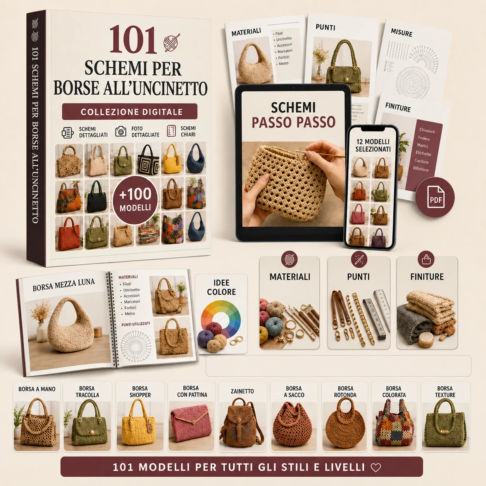
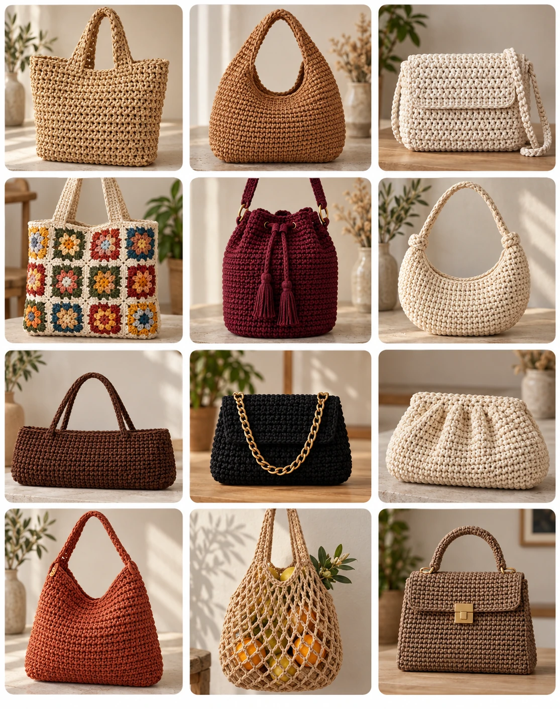
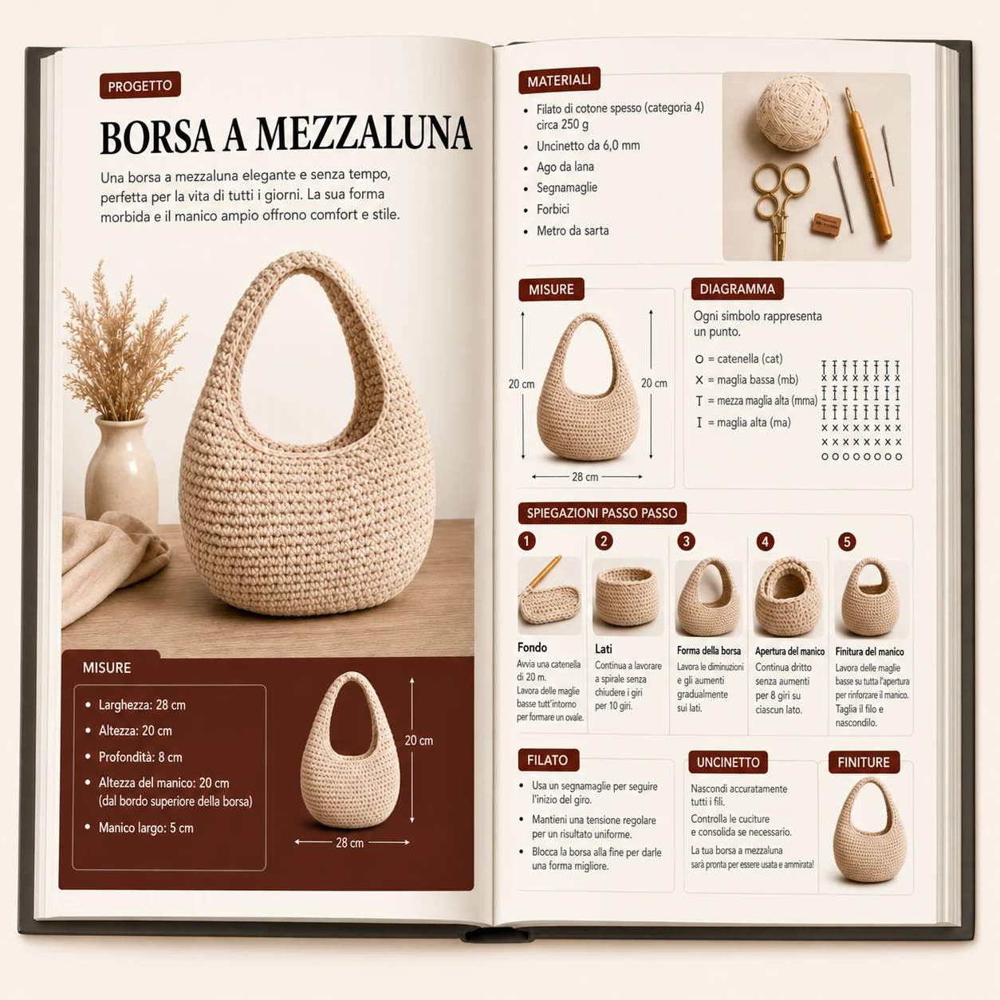
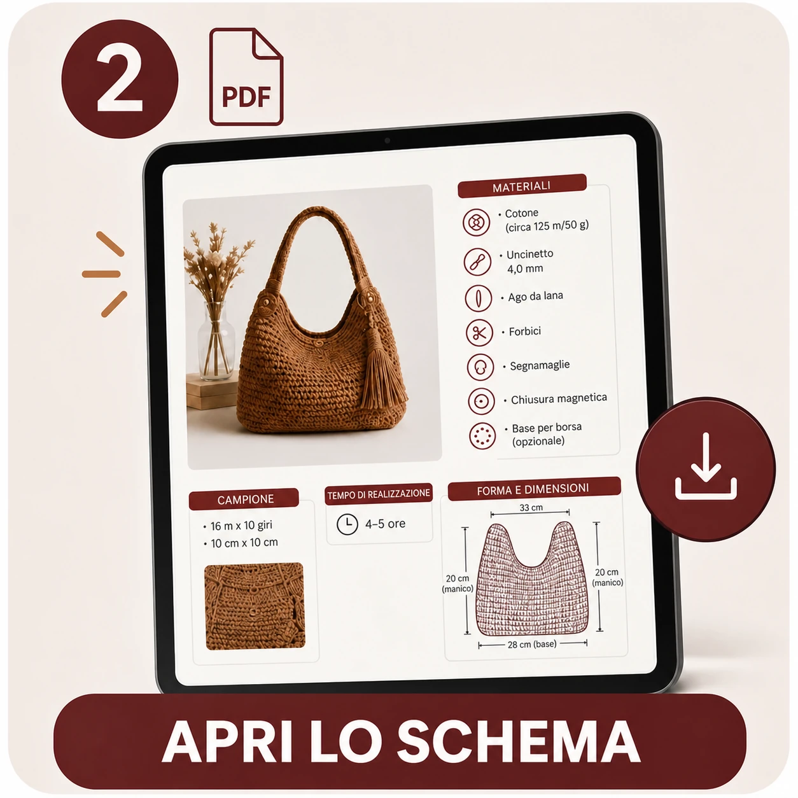
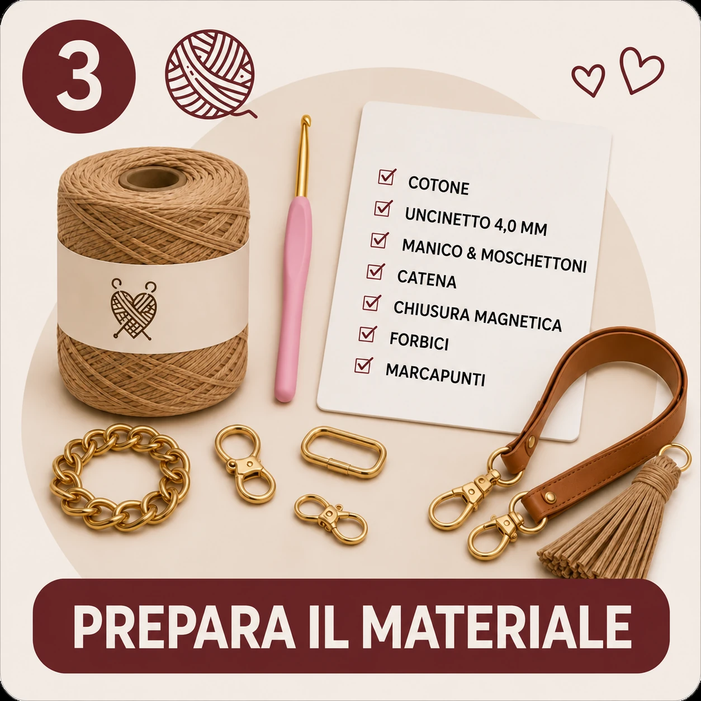
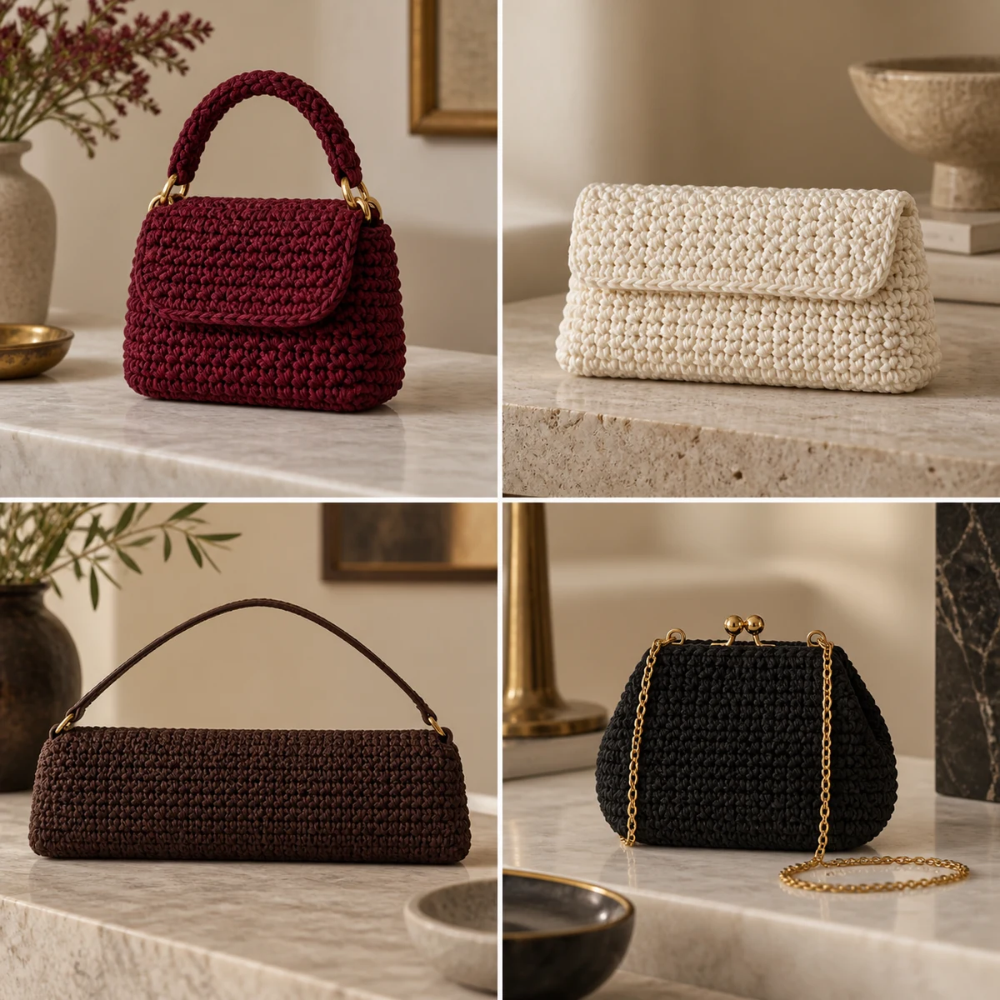
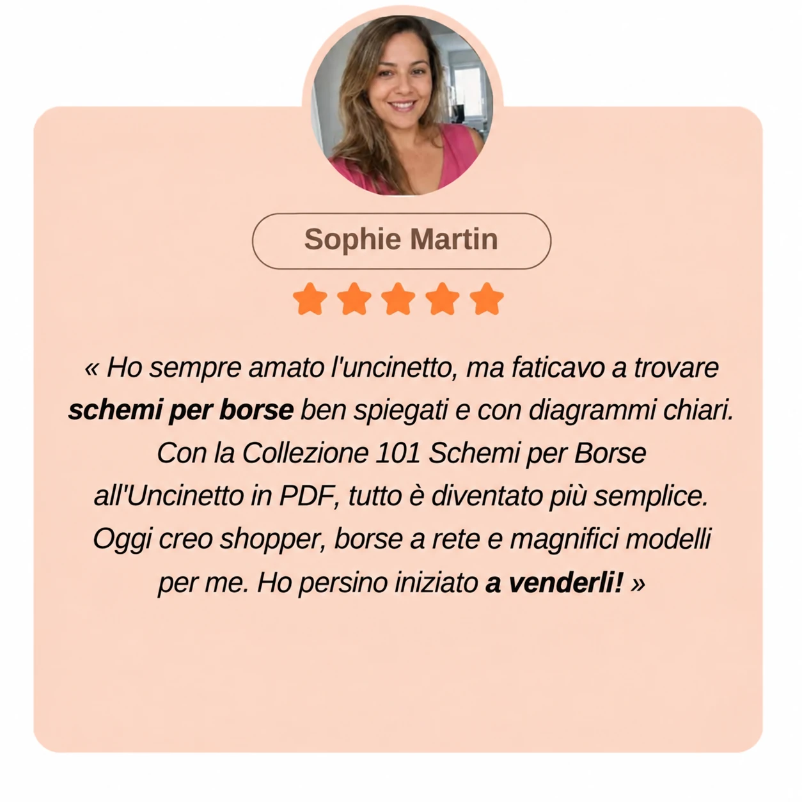

📘 101 patrones en PDF
Una gran variedad de bolsos de mano, shoppers, bandoleras, bolsos hobo, mochilas y muchos otros diseños.
Descubre 101 diseños diferentes con fotografías, diagramas, medidas, materiales necesarios e instrucciones detalladas. Todo reunido en un mismo lugar para que no tengas que pasar horas buscando patrones por separado.

Desde bolsos shopper hasta bolsos bandolera, granny squares y bolsos tipo cubo: tienes 101 diseños a tu alcance para empezar un nuevo proyecto siempre que te apetezca. Elige tu bolso, abre el patrón y empieza a tejer a tu ritmo.
 Correo electrónicoWhatsApp
Correo electrónicoWhatsAppBolsos shopper, bandoleras, bolsos hobo, granny squares, bolsos de rafia, diseños de media luna, bolsos tipo cubo y muchas otras ideas… Esto es solo una pequeña muestra de los 101 modelos incluidos.


Se acabó guardar patrones en mil sitios diferentes, perder enlaces que después no encuentras y encontrarte con instrucciones incompletas. Con esta colección, tendrás tus proyectos de bolsos organizados y siempre a mano.
Elige el diseño, abre el patrón y empieza a tejer.
Una gran variedad de bolsos de mano, shoppers, bandoleras, bolsos hobo, mochilas y muchos otros diseños.
Indicaciones organizadas para que puedas seguir cada proyecto con mayor seguridad.
Representaciones gráficas que te ayudan a visualizar mejor los puntos y la estructura de cada diseño.
Descubre cómo queda el bolso terminado antes de empezar.
Indicaciones útiles para preparar correctamente tu proyecto.
Hilos, agujas de ganchillo, asas, correas, cierres y accesorios.

Ves un bolso precioso en Pinterest, guardas la foto… y unos días después ya no encuentras las instrucciones completas. O, por fin, encuentras un diseño que te encanta, pero faltan las medidas, los materiales necesarios o algunos pasos importantes.
Con esta colección, no tendrás que empezar de cero cada vez que quieras buscar un nuevo proyecto. Tus patrones estarán reunidos, organizados y listos para consultar siempre que te apetezca hacer un bolso nuevo.
Elige tu diseño y empieza con estos cuatro sencillos pasos.

Explora la colección y selecciona el bolso que quieres hacer.

Consulta la información y las instrucciones del modelo que hayas elegido.

Prepara el hilo, la aguja de ganchillo y los accesorios indicados.

Sigue las instrucciones a tu ritmo y crea tu propio bolso.
Diseños atemporales, modelos prácticos y siluetas actuales para que siempre tengas un nuevo proyecto entre el que elegir.

Diseños elegantes o informales para el día a día, las salidas y el tiempo libre.

Modelos prácticos y cómodos de llevar, desde bolsos compactos hasta diseños más flexibles y espaciosos.

Diseños ligeros y naturales, perfectos para la ciudad, el mercado, las vacaciones y los días de verano.

Formas llenas de personalidad que combinan los clásicos del crochet con siluetas más actuales.

Bolsos más pequeños y sofisticados para dar variedad a tu colección de proyectos.
Los tres bonos están incluidos en el Pack Completo.

Hilos, agujas de ganchillo, asas, forros, cierres y accesorios: una guía práctica para elegir con más facilidad todo lo que necesitas antes de empezar.
Incluido en el Pack Completo
Una práctica hoja de consulta con los principales puntos, referencias de medidas e información útil para tener siempre a mano mientras tejes.
Incluido en el Pack Completo
Descubre diferentes opciones de asas, cadenas, correas, cierres y acabados para dar más personalidad y un aspecto más cuidado a tus bolsos.
Incluido en el Pack CompletoEmpieza con la colección principal o elige el Pack Completo, que incluye los tres bonos.
Precio de lanzamiento disponible actualmente para ambos packs.

La colección principal con los 101 diseños.
Precio de lanzamiento:
El importe final, incluido el IVA, se mostrará antes de realizar el pago.
COMPRA NO DISPONIBLE⬇️ El 95 % prefiere la opción de abajo:
Toda la colección, los tres bonos y acceso permanente.
Precio de lanzamiento:
El importe final, incluido el IVA, se mostrará antes de realizar el pago.
COMPRA NO DISPONIBLEPor solo 5 € más, recibirás los tres bonos y tendrás acceso permanente a toda la colección.
✓ 101 patrones + 3 bonos + acceso permanente
El vendedor deberá mostrar el precio definitivo, los métodos de pago y las condiciones aplicables antes de confirmar el pedido.

Tómate tu tiempo para descubrir los diseños y el contenido. Si la colección no es para ti, consulta con el vendedor las condiciones aplicables a un posible reembolso en un plazo de 30 días.
Esta garantía comercial se suma a los derechos que te reconoce la ley y no los limita. En el caso de los contenidos digitales cuyo suministro comienza inmediatamente, la posible pérdida del derecho de desistimiento requiere tu consentimiento expreso para iniciar el suministro y el reconocimiento correspondiente en el momento del pedido. El vendedor deberá mostrar las condiciones definitivas.
Descubre qué opinan de los diseños, los patrones y los bolsos que han creado.



Sí. La colección incluye diseños con distintos niveles de dificultad, entre ellos varios proyectos más sencillos. Aun así, es recomendable conocer los puntos básicos del crochet.
No. Se trata de una colección digital de patrones e instrucciones para que puedas hacer tus propios bolsos.
Después de confirmar el pago, recibirás por correo electrónico el enlace para acceder al contenido digital.
Sí. Puedes consultarlos desde tu móvil, tablet u ordenador y guardar los archivos compatibles en tu dispositivo.
La colección principal con 101 patrones y 12 meses de acceso al área de descargas.
Los 101 patrones, los tres bonos y acceso permanente al área de descargas.
Sí. Puedes vender los bolsos que hayas tejido personalmente siguiendo los patrones. Los archivos PDF no se pueden copiar, compartir ni revender.
Las condiciones de reembolso en un plazo de 30 días deberán ser confirmadas por el vendedor en el momento de la compra.
Elige entre 101 patrones de bolsos a crochet y empieza hoy mismo tu próximo proyecto.